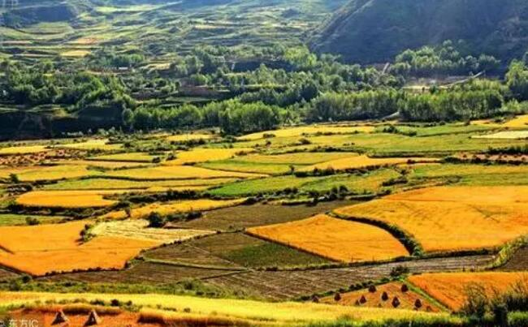

王学军：牢牢把握“三农”工作重心 奋力开创西吉“三农”工作新局面
“三农”工作在新征程上仍然极端重要，须臾不可放松。西吉县作为全区最后一个脱贫摘帽的县，巩固拓展脱贫攻坚成果，全面推进乡村振兴更是重任在肩、任重道远。我们将深入贯彻落实习近平总书记关于“三农”工作重要论述和视察宁夏重要讲话精神，全面落实落细自治区党委部署要求，牢牢把握“三农”工作重心的历史性转移，凝心聚力、真抓实干，坚决做好巩固拓展脱贫攻坚成果同乡村振兴有效衔接，确保重点突破、整体推进，朝着共同富裕的目标稳步前行。

全力以赴巩固拓展脱贫攻坚成果 坚决防止发生规模性返贫
大力弘扬脱贫攻坚精神，坚持把巩固拓展脱贫攻坚成果摆在头等位置来抓，严格落实“四个不摘”要求，保持现有帮扶政策、资金支持、帮扶力量总体稳定，坚决做到不出现规模性返贫。
注重动态监测防返贫。实施脱贫户移民户双富计划，推行农户申请、村组排查监测、乡镇复查监测、县级审核监测的“一申请三审核三监测”易返贫致贫人口发现和核查机制。紧盯脱贫不稳定户和边缘易致贫户，按照“缺什么补什么”的原则，及时跟进产业就业、医疗救助、社会保障等帮扶措施，从制度上堵住返贫的风险漏洞。持续关注收入骤减、支出骤增和受灾、大病户，零就业零产业家庭，“十二五”“十三五”县内搬迁的生态移民、劳务移民及居住在县外1年以上的自发移民等4类重点群体，全程监测“两不愁三保障”及饮水安全情况，采取有针对性的帮扶措施，切实增强脱贫稳定性。
注重常态帮扶固成果。实施城乡居民产业就业双增计划，摸清发展之“困”、收入之“低”的症结，健全相对贫困人口常态化帮扶机制，精准施策，分类扶持。对有劳动能力的农村低收入人口，重点在产业、就业、金融等方面给予扶持。年内建成村级金融服务站40个，开展技能培训0.5万人次，农村劳动力转移就业13万人。对特困供养人员、生活出现严重困难家庭等无法通过创业就业获得稳定收入的人口，认真落实好“社会保障+产业扶持”“双兜底”政策，确保动态监管下应保尽保、凡困必帮、有难必救。
注重政策接续促发展。落实落细脱贫攻坚5年过渡期政策，用足用好国家乡村振兴重点帮扶县综合政策，将扶贫政策接续到乡村振兴中，做好工作机制、帮扶政策、各类规划、机构队伍“四个衔接”，确保工作不留空当、政策不留空白。出台2021年西吉县农业产业发展扶持政策，完善金融扶贫政策，制定加快农业农村现代化实施方案、县内政策性移民致富提升方案等，使扶持政策由到户到人向到村到乡转变，实现区域共享。
坚定不移全面推进乡村振兴 加快改善农村发展建设面貌
坚持以乡村振兴统揽新发展阶段“三农”工作，抢抓国家西部地区乡村振兴重点帮扶县机遇，统筹推进乡村产业、人才、生态、文化、组织全面振兴，不断加大乡村建设力度，促进农业高质高效、乡村宜居宜业、农民富裕富足。
全面推进乡村产业振兴。立足西吉比较优势，重点在产业延链补链壮链上做文章，全力抓好五大重点产业高质量发展。肉牛产业围绕扩量提质延链，加大精深加工环节扶持力度，今年打造高标准肉牛养殖示范村37个，建成万头肉牛屠宰加工厂1个，推动肉牛产业链一体化发展；马铃薯产业坚持“四薯并进”路子，推动淀粉、薯条、粉丝和主食化产品加工齐头并进，新上规模加工企业2家以上，新认证“二品一标”农产品8个；纺织服装加工产业围绕提升工业园区承载能力，抓好现有服装加工企业扩规增量，规划建设纺织服装加工园，引进10万锭纺纱企业1家；旅游产业以创建全域旅游示范县为抓手，做好“旅游+”文章，深入挖掘红色文化旅游资源，新开发一批乡村游、生态游景点和旅游产品，年接待游客160万人次，旅游总收入达到10亿元；林草产业坚持试验示范与全面推广“两手抓”，推行“企业+基地+农户”模式，“四个一”林草产业达85万亩，促进山绿与民富共赢。
全面推进乡村生态振兴。坚决守好改善生态环境生命线，不断加强农村生态文明建设，切实提高生态系统质量。开展大规模绿化行动，全年绿化造林12.13万亩，绿化道路400公里，完成庭院经果林7800亩，力争全县森林覆盖率达22.51%。实施水土保持、月亮山水源涵养等生态保护修复工程，不断提升县域水源涵养和水土保持功能。持续打好蓝天、碧水、净土保卫战，大力推进农业面源污染防治，全力抓好化肥农药减量、畜禽粪污和秸秆资源化利用，确保生态环境保护约束性指标稳定提升，生态环境质量稳中向优。
全面推进乡村人才振兴。积极开展招商引智行动，柔性引进肉牛、马铃薯、蔬菜、旅游等技术体系和人才队伍，积极组织实施一批国家、自治区级重大科技项目，加快科技成果转化运用，切实增强高质量发展后劲。实施高素质农民培育、农村“两个带头人”能力提升和现代青年创新创业培养“三大工程”，年内培训农村实用人才4000人，职业技能培训5200人次。
全面推进乡村文化振兴。加强社会主义精神文明建设，深入学习习近平新时代中国特色社会主义思想，大力弘扬和践行社会主义核心价值观。持续推进农村移风易俗，推广积分制、道德评议会等做法，不断提振农村群众精气神，推动形成文明乡风、良好家风、淳朴民风。深入实施公民道德建设工程，广泛开展文明家庭、文明村镇创建和好邻居、好公婆等选树活动，着力打造一批文明乡村。
全面推行乡村组织振兴。加强基层党组织建设，着力抓好村（社区）换届后续工作，扎实开展新任职村（居）“两委”班子履职培训。健全完善各项规章制度，大力推进基层党建活动阵地标准化建设，积极巩固提升村集体经济成效。提升乡村治理效能，全面完成整合审批服务执法力量改革，加强乡镇便民服务中心和村级服务事项代办点规范化建设，解决好最后一公里问题，着力打造一批善治乡村。
全面实施乡村建设行动。坚持“规划先行、示范引领、因地制宜、分类推进、整体提升”的原则，下大力气推动人居环境整治提升，全力打好厕所革命、农村污水治理、农村生活垃圾治理和村容村貌提升“四场硬仗”。健全完善城乡融合、产城融合发展体制机制，推动教育、医疗卫生、社会保障、公共文化等公共资源合理配置，提升城乡公共服务均等化水平。加强农村水、电、路、网等基础设施建设，全域推广“互联网+城乡供水”模式，改建及维修农村公路230公里，新建5G基站20座。深化农村改革，打好农村基本经营制度、土地制度、集体产权制度等“组合拳”，着力打造一批活力乡村。
坚持不懈加强党的全面领导 持续强化“三农”工作保障
“三农”问题是关系国计民生的根本性问题，是全党工作重中之重，加强党对“三农”工作的全面领导，是做好新发展阶段“三农”工作的根本政治保障。
加强组织领导。深刻领会习近平总书记关于“三农”工作的战略定位，全面贯彻《中国共产党农村工作条例》，坚决扛起政治责任，认真落实农业农村优先发展的方针，健全完善党委领导、政府负责、县乡村书记上下贯通、一抓到底的乡村振兴工作体系。充分发挥县委农村工作领导小组牵头抓总、统筹协调作用，把“三农”工作统起来、抓起来，形成齐抓共管、上下贯通、整体推动的工作合力。
建强基层队伍。突出抓基层、强基础、固基本的工作导向，推动各类要素资源向基层下沉，树牢在乡村振兴主战场、乡村建设第一线、服务群众最前沿识别选拔干部鲜明导向。扎实有序做好乡镇换届工作，选优配强领导班子，扶好用好农村基层党组织带头人，努力建设一支政治过硬、本领过硬、作风过硬的乡村振兴干部队伍。
强化督查考核。坚持把督查考核作为推进工作落实的重要手段，健全县乡村三级书记抓乡村振兴考核机制，将巩固拓展脱贫攻坚成果纳入乡村振兴考核，切实发挥督查考核“指挥棒”“风向标”作用，激发全县各级干部崇尚实干、担当作为的精气神。


 意见反馈
意见反馈